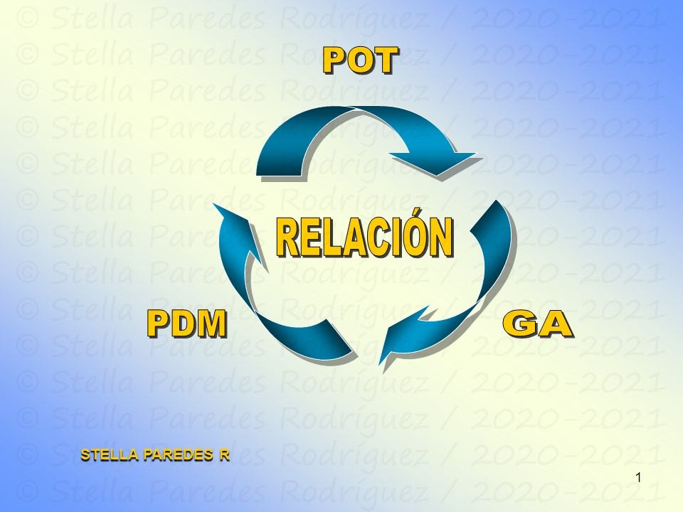
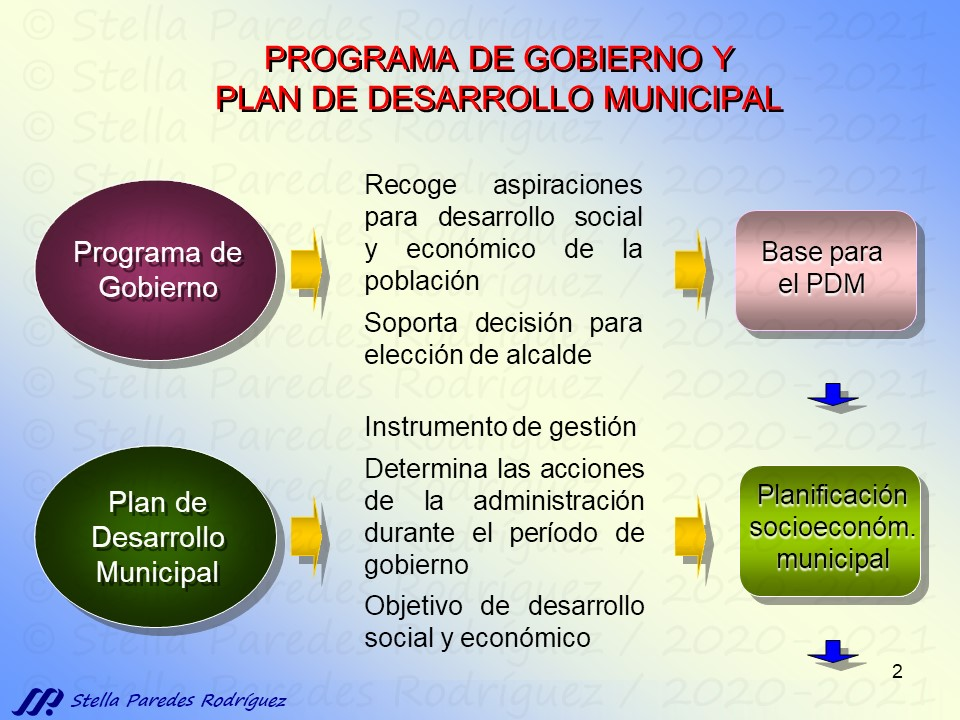
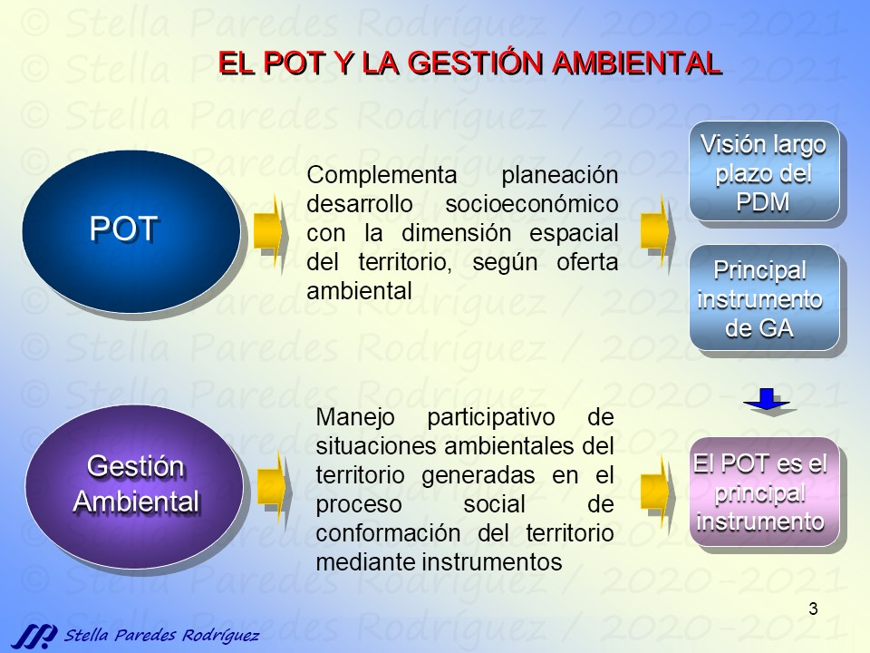
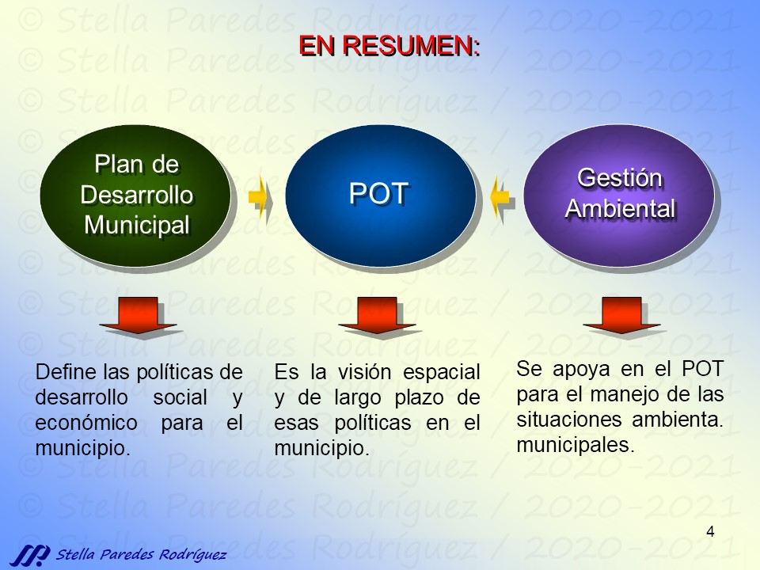

El curso de Planificación Regional se ha transladado a instrucción virtual. En los enlaces a continuación se encuentran las presentaciones y sus archivos de audio correspondientes. Los archivos de audio se pueden escuchar directamente en el navegador, o se pueden descargar y escucharse con el navegador o cualquier otro reproductor de audio que reproduzca archivos OGG.
El contenido de esta página web se actualizará con cada presentación en la semana correspondiente a la clase en la cual se vaya a realizar.
Sugerencia: Puede hacer "CTRL + Clic" sobre los enlaces de los archivos de audio para abrirlos en una nueva pestaña. De esa forma, puede iniciar la reproducción del audio y observar la diapositiva al mismo tiempo (regresando a la pestaña de las diapositivas).



